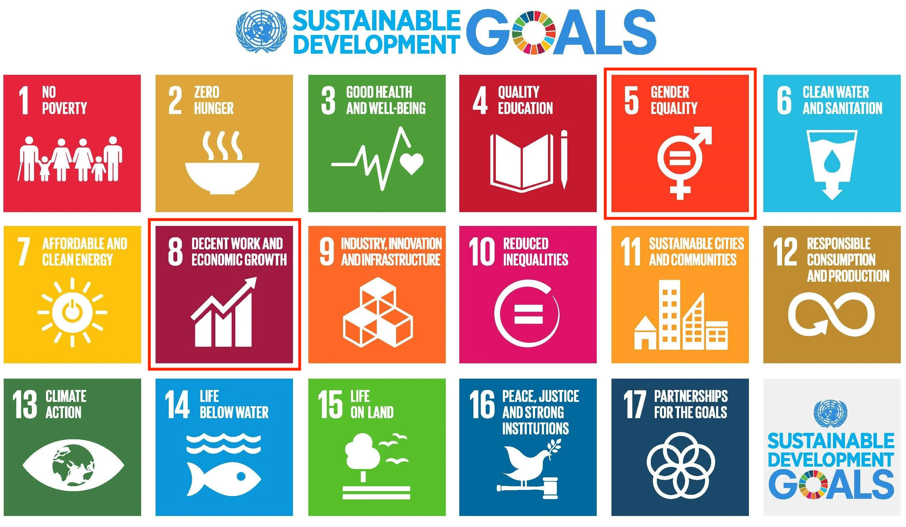
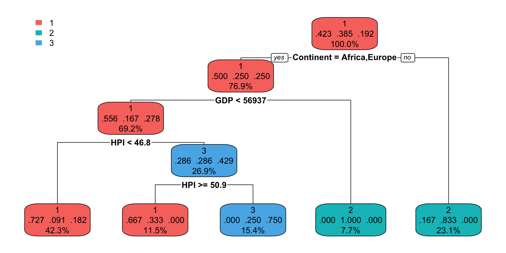

In a report published by the International Monetary Fund titled “Tackling Legal Impediments to Women’s Economic Empowerment”1 2022, The report highlighted how legal framework has help improve woman’s success in the economy of various countries such as Iceland, Peru & Rwanda.
This presentation thus aims to explore the relationship between nation’s legal framework achievements in gender equality and woman’s success in the economy. offering insights into the significance of legal framework in gender equality and woman’s status in a country economy.
To what extent does a nation’s legal framework on gender equality affect economic growth for women?
Specifically, what is the relationship between a nation’s legal framework achievements in gender equality and woman’s success in the economy?
Can GDP, Happy Planet Index Score and Continent serve as predictors for a nation’s legal framework achievements in gender equality & proportion of women in managerial positions?
The economic empowerment of women has broader implications for overall economic development.
Inform policymakers and lawmakers about the effectiveness and relevance of legal frameworks in fostering economic growth for women.
The impact of these legal frameworks is crucial in advancing gender equality efforts.
Sheds light on the potential benefits and consequences of legal frameworks on economic growth, impacting woman’s lives and opportunities.
Women participation in the economy is related to Goals 5 and 8.
Indicator 5.1.1: Legal frameworks that promote, enforce and monitor gender equality (percentage of achievement 0 - 100) -- Area 3: employment and economic benefits
Indicator 5.5.2: Proportion of women in managerial positions
Indicator 8.5.1: Average hourly earnings of employees by sex, age, occupation and persons with disabilities
Indicator 8.5.2: Unemployment rate by sex, age and persons with disabilities
We anticipate that the higher the nation’s legal framework achievements in gender equality will result in a higher percentage of women holding managerial positions.
There seem to be a weak correlation between the percentage of achievement in legal employment and benefit frameworks for females, and the percentage of woman in managerial position. The data distribution for the percentage of achievement in legal employment is left skewed and percentage of woman in managerial position is normally distributed.
The percentage of achievement in legal employment is re-expressed by taking the squared root of the skewed values. This helps to reduce the impact of extreme values and make the distribution more symmetrical. This resulted in an higher correlation significance value increase by 0.021, making it slightly more correlated.
Daily USD exchange rate as at end of day 2023-07-19 GMT We anticipate that countries with lower unemployment rates for women should have higher average hourly earnings for women.
A correlation of -0.097 indicates a weak negative relationship between unemployment rate for women and average hourly earning (USD) for women. Both data distribution are right-skewed.
The two indicators are transformed using square root and logarithm respectively, making extreme values more symmetrical. This resulted in an insignificant correlation value increase by 0.103, with a correlation that is very close to zero, indicating that there is virtually no relationship between them.
We anticipate that having a higher the nation’s legal framework achievements on gender equality would result in lower unemployment rate for women.
There doesn’t seem to be any significant correlation between the percentage of legal employment and benefit frameworks for females, and the unemployment rate of females. However, this might be due to skewed distributions, hence we will re-express this data.
After logarithmic and square root transformations, correlation coefficient seems to have improved positively. However, it still appears to be insignificant.
This might be due to countries having an already-high unemployment rate irregardless of gender.
We anticipate that having more women in managerial positions will increase the average hourly earning for female employees.
There seems to be a negative correlation between the percentage of female hourly earnings and women in managerial positions. However, this might be due to skewed distributions of female hourly earnings, hence we will re-express this data using logarithmic transformations .
There still seems to be a negative correlation between the percentage of female hourly earnings and women in managerial positions after logarithmic transformations .
Considering the four selected Sustainable Development Goals, what is an appropriate number, k, of clusters for countries?
The ‘elbow criterion’ suggests k = 2 or 3. We choose k=3, but this decision is admittedly subjective.
1. High Achievement of Legal Frameworks on Gender Equality and High Female earnings
2. High Achievement of Legal Frameworks on Gender Equality and Low Women in Managerial Positions
3. High Achievement of Legal Frameworks on Gender Equality and High Percentage of Women in Managerial Positions
Can the cluster assignment be predicted based on the country’s GDP, Happy Planet Index Score and Continent?

1. High earnings and High Achievement of Legal Frameworks on Gender Equality
2. High Achievement of Legal Frameworks on Gender Equality and Low Women in Managerial Positions
3. High Percentage of Women in Managerial Positions
Ten-fold cross validation indicates that the decision tree has a accuracy of 0.12.
Kappa Value is shown to be -0.3587879.
The relative importance of the predictors for classification are as follows:
CHIA YI XUAN, TSUI SAU CHI, JEANIE OH JUN NING, VARADHARAJAN JAYAPRIYA, GU JINMING, WONG JUN HAO